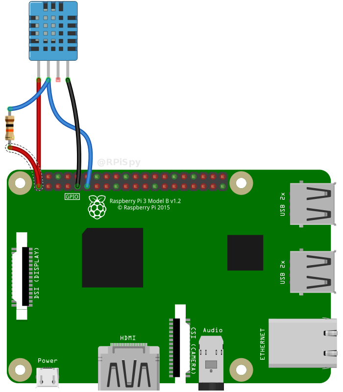
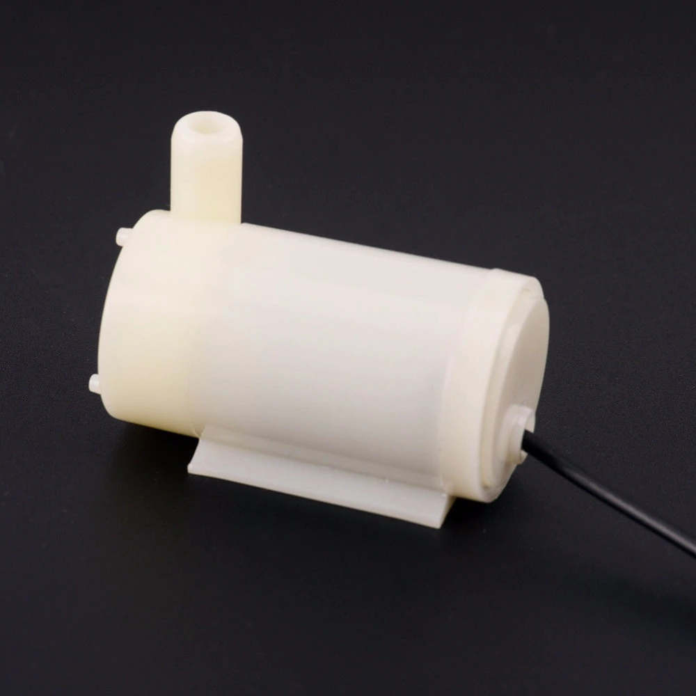

Dokumentacja techniczna części sprzętowej
Do zrealizowania części sprzętowej skorzystano z modułów komunikacyjnych wbudowanych w platformę mikroprocesorową Raspberry Pi. Rozpisane piny urządzenia znajdują się na rysunku poniżej:
Czujnik temperatury i wilgotności DHT11

Do pomiaru temperatury i wilgotności użyto czujnik wilgotności DHT11. Jest to czujnik cyfrowy z interfejsem jednoprzewodowym. Zakres jego pracy dla temperatury to od -20 °C do +60 °C, a wilgotności od 5 % do 95 % RH. Czujnik ma rozdzielczość 8-bitową, przez co jego dokładność to 1°C oraz ±1 % RH.

Czujnik podłączony został do napięcia 3.3 V urządzenia Raspberry Pi (pin 1), uziemienie do pinu 9 oraz dane zostały podłączone do GPIO 17 dostępnego na pinie 11. W celu poprawnej komunikacji jednoprzewodowej konieczne jest zastosowanie rezystora pomiędzy napięciem a linią danych. Rezystor powinien mieć wartość o 4.7k do 10k Ohm. Połączenie czujnika z RPi zostało przedstawione na poniższym rysunku:

Do połączenia się z czujnikiem wykorzystano gotową bibliotekę od Adafruit. W celu instalacji tej biblioteki trzeba wykonać następujące kroki: Zainstalować potrzebne narzędzia:
sudo apt-get update
sudo apt-get install build-essential python-dev
Następnie pobrać bibliotekę z repozytorium na githubie: git clone https://github.com/adafruit/Adafruit_Python_DHT.git cd Adafruit_Python_DHT Następnie zainstalować bibliotekę dla Pythona 2 i Pythona 3 za pomocą komend:
sudo python setup.py install
sudo python3 setup.py install
Do komunikacji z czujnikiem został napisany skrypt w języku Python. Przykładowy kod programu umożliwiający komunikację z czujnikiem:
import sys
import Adafruit_DHT
# 11 stand for DHT-11 and 17 stands for GPIO pin
humidity, temperature = Adafruit_DHT.read_retry(11, 17)
if humidity is not None and temperature is not None:
print('Temp={0:0.1f}* Humidity={1:0.1f}%'.format(temperature, humidity))
else:
print('Failed to get reading. Try again!')
sys.exit(1)
Czujnik natężenia światła
Zastosowanym czujnikiem światła jest BH1750. Jest to czujnik przetwarzający natężenie światła o długości z zakresu od 320 nm do 1050 nm na mierzalną (np. poprzez zastosowanie mikrokontrolera) proporcjonalną częstotliwość. Zakres działania czujnika to 1-65535 lx (luksów) z rozdzielczością 1 lub 4 lx w zależności od wybranego trybu pracy. Komunikuje się poprzez interfejs I2C (TWI), czyli dwie linie: danych - SDA i zegarową SCL.

Czujnik podłączony został do napięcia 3.3 V z urządzenia Raspberry Pi, uziemienie do GND oraz dane zostały podłączone do GPIO 2 (SDA) oraz do GPIO 3 (SCL) został podłączony zegar interfejsu I2C.

Do komunikacji z czujnikiem wykorzystano magistralę I2C. Po podłączeniu pinu ADD do uziemienie urządzenie ma adres 0x23. Można ustawić różne tryby odczytu. Wykorzystany został tryb 0x20, jest to tryb umożliwiający odczyt z dokładnością do 1 lx oraz pozwalający na wyłączenie urządzenia po odczycie w celu oszczędzenia energii. Przykładowy kod w języku Python:
def convert_GY30_to_Number(data):
# Simple function to convert 2 bytes of data
# into a decimal number.
result=(data[1] + (256 * data[0])) / 1.2
return (result)
def read_data_GY30():
bus = smbus.SMBus(1) # Rev 2 Pi uses 1
# 0x23 is an addres of device, 0x20 is measurement at 1lx resolution.
# Time typically 120ms
# Device is automatically set to Power Down after measurement.
data = bus.read_i2c_block_data(0x23,0x20)
return convert_GY30_to_Number(data)
Czujnik wilgotności gleby
Zasilany jest napięciem od 3,3 V do 5 V. Urządzenie składa się z trzech części: sondy pomiarowej, modułu detektora oraz przewodów. Sondy należy połączyć z modułem głównym przy pomocy przewodów i umieścić w glebie, której wilgotność będzie mierzona.
Czujnik posiada wyjście cyfrowe D0 sygnalizujące przekroczenie ustawionej za pomocą potencjometru wartości oraz analogowe A0 przy pomocy którego uzyskuje się dokładną wartość wilgotności. Za pomocą potencjometru ustawiany jest próg, po którego przekroczeniu wyjście D0 przechodzi ze stanu wysokiego w stan niski. Czujnik posiada także wyjście analogowe A0, które należy podłączyć do wyprowadzenia przetwornika A/C, a następnie możliwe jest za pomocą interfejsu I2C połączenie z urządzeniem Raspberry Pi.

Pompa do wody
Do podlewania rośliny w doniczce została wykorzystana pompka do wody działająca na bazie komutatorowego silnika prądu stałego. Pompa zasilana jest napięciem od 2.5 - 6 V. Prąd pobierany przez silnik wynosi 130-220 mA. Wydajność przepływu cieczy to 80-120 L/h. Maksymalny prąd, który może być pobierany z zasilania 5V urządzenia Raspberry Pi to 300 mA, więc z urządzenia bez problemu można zasilić pompę do wody. Do wysterowania silnikiem został użyty mostek H L293D.
